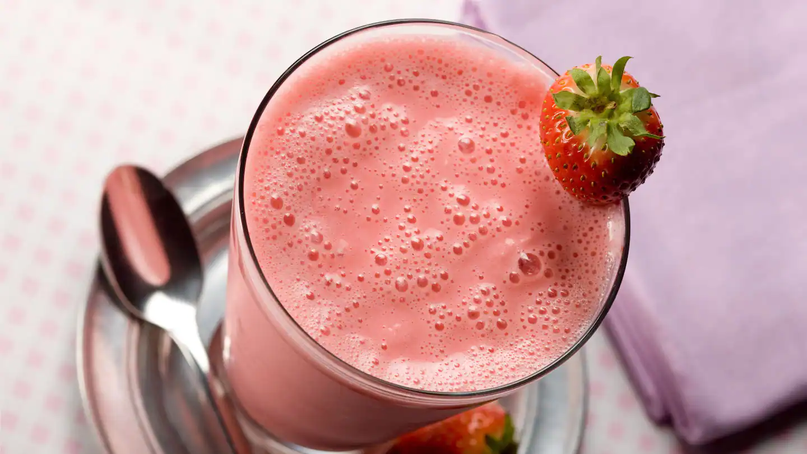

Description
Sweet summertime is the perfect season for a double strawberry milkshake With the sun
shining bright as you sit by the pool, this no-bake, quick and easy recipe has all the best
ingredients.Fresh strawberries and strawberry ice cream.Even throughout the other seasons, a refreshing strawberry
milkshake will surely put a smile on everyone’s faces as they sip away.
Ingredients
-
8 ounces strawberries,stemmed and sliced
- ½ teaspoon vanilla extract
- 1 pint vanilla ice cream
- ¼ cup milk
Directions
- Take chopped strawberries, sugar and vanilla extract in a bowl and mix.
- And keep it aside for at least 30 minutes and let them marinate
- Now take marinated strawberries in the blender along with milk and ice cream.
- Blend it till smooth and serve it in glass.
Home